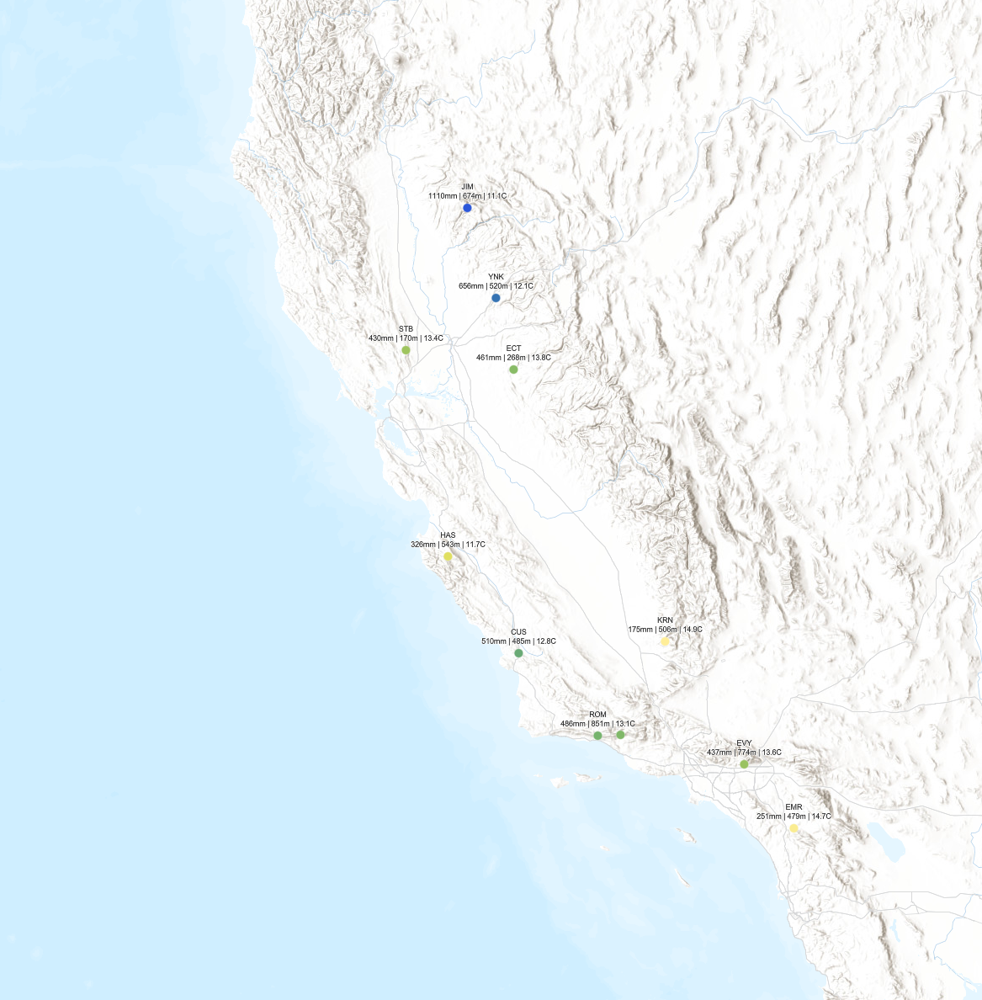
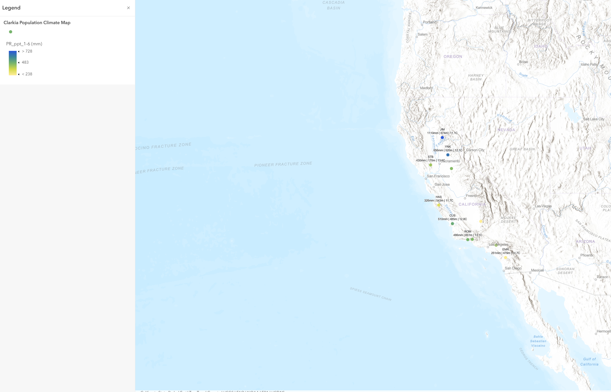

ArcGIS Online · Botanical research
Clarkia Flower Habitat & Climate Mapping
Mapping Clarkia study locations and environmental variables to support botanical research and the interpretation of habitat conditions.
Project purpose
Show the geographic context of Clarkia study locations and make elevation, precipitation, and temperature variables visible together for environmental interpretation.
Original project outputs
Final map & workflow




Methodology
- Mapped Clarkia study locations in ArcGIS Online.
- Organized environmental attributes describing elevation, precipitation, and temperature.
- Used point symbology and labels to display differences between locations.
- Exported the final map and captured the mapping workflow.
Data & documentation
Clarkia study locations and associated environmental variables. The exported labels display precipitation in millimeters, elevation in meters, and temperature in degrees Celsius. Climate periods, measurement methods, and original dataset citations are not documented in the repository.
Interpretation & limitations
This is a descriptive environmental map, not a validated habitat suitability model. Displayed climate differences do not by themselves establish drought impacts, physiological responses, or causes of plant distribution.